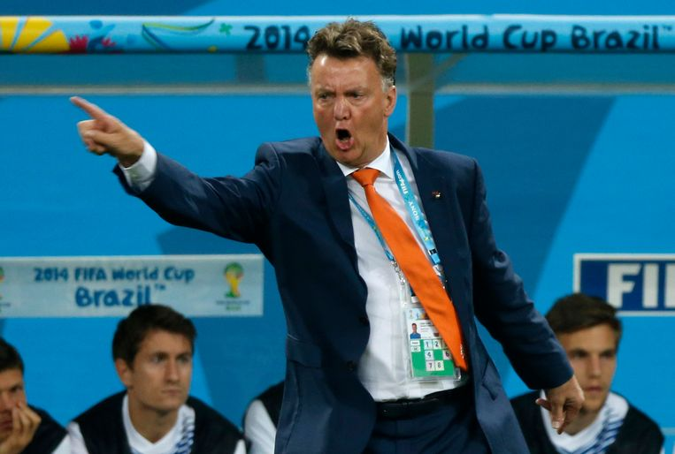

Louis van Gaal is voor de derde keer de bondscoach.
Hij staat enorm bekend als strenge trainer met veel ervaring.
Hij heeft een indrukwekkend cv en heeft als trainer veel prijzen gewonnen.
Ik vind Louis van Gaal de ideale bondscoach
Veel mensen vinden Louis een arrogante klootzak.
Ze vinden hem uitspraken en zijn gedrag nogal arrogant
Louis van Gaal heeft een haat/liefe- verhouding met de media
Hij heeft hekel aan journalisten die kritische en
niet leuke vragen stellen over zijn prestaties.
Maar ik vind zijn persconferenties altijd geniaal
Soms gebeuren er leuke en grappige momenten in zulke persconferenties
Ik kan er altijd van genieten